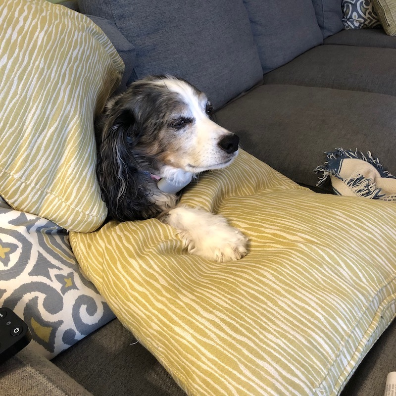
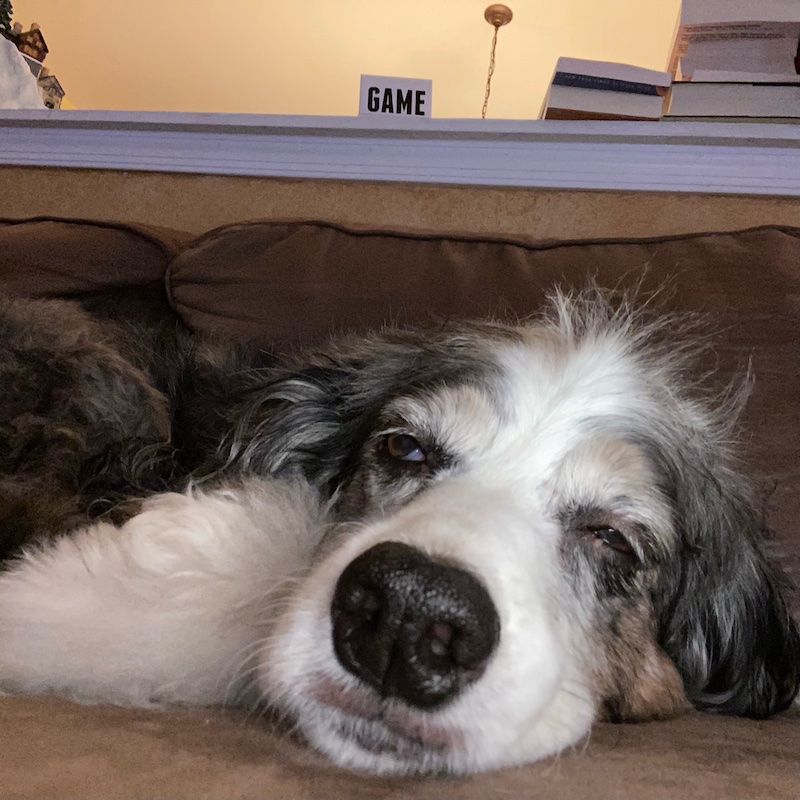

What do a Math (and Econ) major, CS Major, and Graphic Design Major have in common? Academically speaking, there isn't much overlap. We all have our own academic paths, whether we are only beginning or nearing the end. Come explore our portfolios, and see what academic diversity we have to offer. Each page is dedicated to one portfolio for the three of us. We encourage you to explore them all, but also understand if you would like to avoid the Math major's portfolio.
The Graphic Design Major: Alexandra
Jenna Peters is a Junior at Boston University and Pursuing a degree in Economics and Mathematics as well as a minor in Computer Science. When she isn't ridiculously busy with her ridiculous major she works as a Course Assistant for Introduction to Computer Science (CS 111). She hopes to one day work for the Federal Reserve, because the whole point of her ridiculous major is to one day be an Economist. Visit her page to read musings about Math and Economics, and maybe even see a bit of code...
The Econ and Math Major: Jenna
Jenna Peters is a Junior at Boston University and Pursuing a degree in Economics and Mathematics as well as a minor in Computer Science. When she isn't ridiculously busy with her ridiculous major she works as a Course Assistant for Introduction to Computer Science (CS 111). She hopes to one day work for the Federal Reserve, because the whole point of her ridiculous major is to one day be an Economist. Visit her page to read musings about Math and Economics, and maybe even see a bit of code...
The Computer Science Major: Isabelle
Jenna Peters is a Junior at Boston University and Pursuing a degree in Economics and Mathematics as well as a minor in Computer Science. When she isn't ridiculously busy with her ridiculous major she works as a Course Assistant for Introduction to Computer Science (CS 111). She hopes to one day work for the Federal Reserve, because the whole point of her ridiculous major is to one day be an Economist. Visit her page to read musings about Math and Economics, and maybe even see a bit of code...
